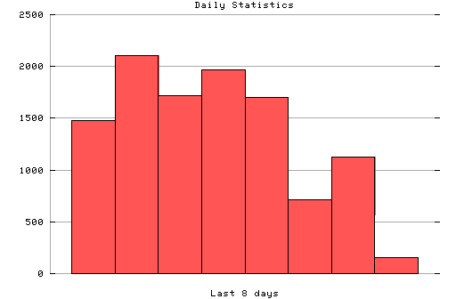

HTTP Server Daily Statistics
Covers: 02/05/96 to 02/12/96 (8 days).
All dates are in local time.
02/05/96 (Mon): 1481 : ################################################||### 02/06/96 (Tue): 2109 : ################################################||### 02/07/96 (Wed): 1718 : ################################################||### 02/08/96 (Thu): 1967 : ################################################||### 02/09/96 (Fri): 1702 : ################################################||### 02/10/96 (Sat): 709 : ################################################||### 02/11/96 (Sun): 1126 : ################################################||### 02/12/96 (Mon): 154 : ###############

Statistics generated at Mon Feb 12 05:08:45 MET 1996, (C) Schibsted Nett AS, 1995.